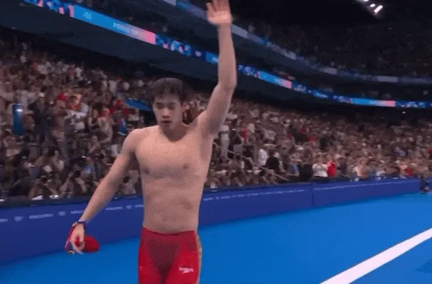
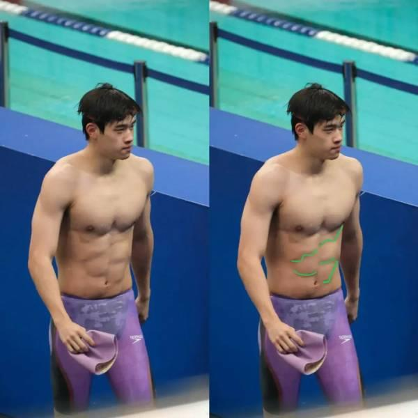
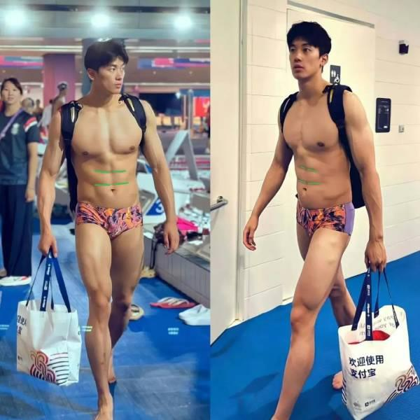

要说巴黎奥运一夕成名的中国游泳选手，勇夺双金的潘展乐榜上有名。有粉丝在网络发问，为何潘展乐的腹肌不完全对称，而且交错排列，汪顺的腹肌则是完美工整。
中国新闻周刊报导，腹肌是腹部肌群的统称，主要包括腹直肌、腹外斜肌、腹内斜肌和腹横肌。常说的腹肌指的是腹直肌，但有几块腹肌，其实是由基因决定的。
腹直肌自上而下被3到4条横沟分成多个肌腹，这些横沟即腱画。不过腱画的数量并不固定，根据「中国临床解剖学杂志」上一篇论文提出，单侧有4个腱画占17.5％，3个占77.5％，2个占5％。实际生活中，还有的人腱画数量左右不一，左4右3也不是不可能，这可能会导致其腹肌左右数量也不一致。

常见的腱画形态有「一」字形，「Λ」形、「И」或「Ν」 形、「Μ」或「W」形。不同形态的腱画，使得腹肌的形状不同。
潘展乐的腹肌错落感尤为明显，是因为他的腱画形态不仅多样，且左右形态还不太一样，「W」形、「︶」形、「√」都有，最终腹肌「高高低低」也就不奇怪了。
当然，整齐画一的腹肌也不是完全不存在。中国游泳选手汪顺的腹肌就尤为规整，腱画都是「一字形，腹肌几乎完全左右对称。

相比之下，其他项目的选手是否有明显的腹肌就不一定了，比如在本届巴黎奥运夺得乒乓球男子单打冠军的樊振东，腹肌就不甚明显，还被粉丝亲切地称为「小胖」。
另据中国中医药报，巴黎奥运随队队医沈坚表示，潘展乐的成功背后离不开整个医疗团队的精心守护，其中中医药疗法扮演内核角色。
沈坚说，保障潘展乐夺金的主要秘诀有三点。第一是基于中医理论的个性化评估与监控。第二是中医非药物疗法，针灸、推拿、拔罐、刮痧等非药物疗法在医务监督保障中发挥了巨大作用。第三是营养与心理疏导，达到「形神共治」。